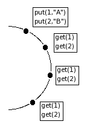

| Executing
a simple test ___________________________________________________________________________________________________ The example is a simple test to verify if some data was put in a DHT. We used the freepastry DHT on this test. A simple test example How to execute the simple test example ___________________________________________________________________________________________________ The simple test On a system of "n" peers, where a peer inserts "k" values, are all peers able to retrieve all the inserted values?  The test has four actions. In the first action, all peers join the system. The second action waits for about 16 seconds in order to let the system stabilize (ie. update routing table). In the third action, a peer inserts k data(string of 10 objects), also storing them in the test case variable V. In the fourth action, all the peers try to retrieve the data, waiting for a maximum time of 16 seconds. Once k is retrieved, it is compared to the data stored in V to assign a verdict. How to execute the test example(unix-like) We created this example using Freepastry. This example uses the centralized architecture. 1 - Download and set the CLASSPATH for peerunit (described in the install page). 2 - Download Freepastry and set the CLASSPATH. It requires three packages to run: FreePastry-2.0_02.jar xpp3-1.1.3.4d_b2.jar xmlpull_1_1_3_4c.jar 3 - Configure the tester.properties that should be in the "config/" folder. This folder must be created in the same folder where you put the peerunit.jar file. Here is an example of the tester.properties file. To execute this test you just have to change the following properties: tester.server=<IP where the coordinator will execute> tester.logfile=<path and the name for the peerunit logfile> tester.logfolder=<path to store the logfiles of the peers> tester.peers=<number of peer that execute the test> 4 - Start the peerunit coordinator: $ java fr.inria.peerunit.rmi.coord.CoordinatorImpl & 5 - Starting the bootstrap peer: $ java freepastry.Bootstrap & 6 - Run the test(each peer will run in a single JVM): $ java fr.inria.peerunit.TestRunner freepastry.test.SimpleTest & For instance, if you want to execute with 4 peers(set in tester.peers property), you can use this simple script: #!/bin/bash for ((i=0;i<=3;i+=1)); do java freepastry.test.SimpleTest & done Obs. Sometimes Freepastry doesn't bootstrap the peers and the verdict is "inconclusive", so you need to give another try. The test source code: Freepastry peer created using its tutorial (Peer.java , Network.java and Bootstrap.java) Test code (SimpleTest.java) home ___________________________________________________________________________________________________ |